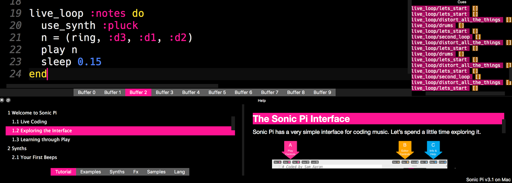

Generating Music Using Sonic Pi
How I Learned Ruby by Becoming a Live Coding DJCode
https://github.com/JessicaGarson/RubyNationSlides
jessicagarson.com/RubyNationWhat is Sonic Pi?
Sonic Pi is an IDE that allows us to interact with our computer as if we were using a synth.Where can I get this?
You can download Sonic Pi at https://sonic-pi.net/The Coolest Part
Let's go on a tour of the IDE
We'll go through and see what the IDE looks like.Basic syntax of a loop
live_loop :name_your_loop do
synth :name_of_synth
sleep number
end
Enough talk let's rock
live_loop :lets_start do
synth :pretty_bell
sleep 0.25
end
Let's add in a sample
live_loop :lets_start do
synth :pretty_bell
sample :loop_safari
sleep 0.25
end
Add an Element of Randomness
live_loop :second do
synth :tri
sleep rand(0.0..1.0)
end
Another loop for drums
live_loop :drums do
if one_in(5)
sample :drum_cymbal_hard
sleep 0.5
else
sample :drum_tom_mid_hard
sleep 0.7
end
end
Melody
live_loop :notes do
use_synth :square
n = (ring, :a3, :f2, :d2)
play n
sleep 0.75
end
Let's record a sample
Do I have a volunteer to come up and record a sample.What did that rate thing just do?
Rate means the rate to play back. The default is 1. If we set the rate to 2 this will play it back at double the normal speed. When we adjust the rate to 0.5, we slow it down to half of normal.What about beat_stretch?
Beat_Stretch allows us to stretch or shrink the sample to match the number of beatsAdding distortion in
live_loop :distort_all_the_things do
with_fx :distortion do
synth :tb303
sleep 5
end
end
Attack
Attack is the portion of the envelope that represents the time taken for the amplitude to reach its maximum level. Essentially it is the initial build up of a sound.Decay
The progressive reduction in amplitude of a sound over time. The decay phase starts as soon as the attack phase has reached its peak. In the decay phase, the signal level drops until it reaches the sustain level.Let's adjust the attack and decay
We'll be adding to the existing loops we have.Let's hear our song

I can't wait to hear what you build
Email - jessica.garson@gmail.comTwitter - @jessicagarson